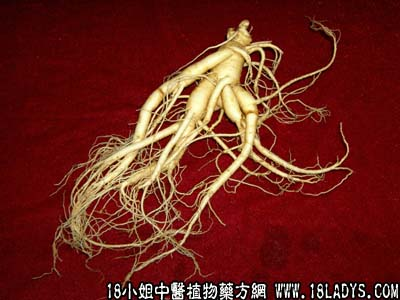

人参(中草药名称:人参)(科目:五加科)

【中药概述】
人参为五加科草本植物人参的根（Radix GinsengGinseng）甘、微苦，微温。归脾、肺、心经。
1．大补元气：用于气虚欲脱，短气神疲、脉微欲绝等，如（<世医得效方>人参附子汤）；用于正虚邪实，或邪气未尽而正气已衰的证候，如体虚外感的，如（参苏饮）。
单用本品大剂量浓煎服，即（<医方考>独参汤）为补气固脱之有效良方。
2．补益脾肺：用于脾气虚弱，倦怠乏力、食少便溏或中气下陷等，如（<和剂局方>四君子汤、补中益气汤；用于肺肾气虚所致的呼吸短促、动辄气喘、易出虚汗等症，如（人参蛤蚧散）。
3．生津止渴：用于温热病耗伤津液及消渴症等，如（<内外伤辨惑论>生脉散）；用于热病气阴两伤，症见身热、口渴、汗多、脉大无力者，如白虎加人参汤。
4．安神定志：用于气血亏虚的心神不宁、心悸怔忡、失眠多梦等，如（归脾汤）。
【药效鉴别】
从气血的关系来讲，气旺可以生血，故人参又有益血之功。在安神益智，增强智力活动方面颇有特殊的功效。其扶正祛邪的作用也较强。
【药理作用】
1．对中枢神经系统的作用：有镇静和兴奋双向作用，与用药时神经系统的功能状态有关系，与剂量大小及人参的不同成分亦有关。能减轻中枢抑制药（水合氯醛、氯丙嗪等）的抑制作用。
2．适应原样作用：人参能增加机体的非特异性抵抗力。增加机体的非特异性抵抗力人参对各种有害因素如物理的（冷冻、高温、过度运动、高压或低压）、化学的（各种毒剂、麻醉药物等）、生物的（异种血清、细菌、移植瘤等）的不良影响均能增加机体的抵抗力。
3．对循环系统的作用：能双向调节血压、强心、保护心肌。调节血压、强心、保护心肌人参对麻醉动物，小剂量可使动物血压上升，大剂量则使血压下降；人参的甙类对麻醉动物呈轻微的短时降压。人参水煎剂有类似强心甙的作用。
4．对内分泌的作用：人参皂甙有间接促进肾上腺皮质功能的作用。醇提取物对大鼠有抗利尿作用。可能有促性腺激素样作用。
5．对物质代谢的影响：具有降血糖等作用。
6．对血液及造血系统的作用：人参的醇或水提取物可使兔骨髓、肝、脾等红细胞生成素的含量升高。人参总皂甙是由具溶血性和抗溶血性的二种类型的皂甙所组成。此外尚有抗炎、免疫、抗肿瘤等作用。
【化学成分】
含多种人参皂甙（13种以上）、人参醇、人参烯、多种糖类，多种维生素，多种氨基酸、人参酸、胆碱、甾醇类、黄酮类及挥发油。
【用量用法】
5——10g（挽救虚脱，当用大量15～30g），宜文火另煎，将参汁兑入其它药汤内饮服。
【使用注意】
凡肺气壅、胸闷憋气、表邪未解及一切实证、热证均忌用。服人参不宜喝茶和吃萝卜。反藜芦（诸参辛芍叛藜芦）；畏五灵脂（人参最怕五灵脂）。
【注】
山参（野生者称“山参”，人工栽培者为“圆参”）。在补气之中兼能养阴生津功效较佳。
生晒参（为圆参不经加工洗净晒干者为“生晒参”，用硫磺薰过，再晒干者）。微苦、甘。
红参（红参又名生蒸参。为园参经刷洗、笼蒸等加工后，晒干而成）。甘，微苦。
【药效鉴别】 红参性偏温，温中补气，适用于气虚、阳虚体质，补脾胃，鼓舞脾胃元气。
白糖参（擦去外皮经糖制者为“白参”白糖参，经扎孔、浸糖、烤干等加工而成）。药力弱，常用于病后体弱、气阴耗伤之补养。
人参条（系人参根茎上的不定根经加工而成者）。
《本草从新》云：“生津，止渴，补气。其性横行手臂，指臂无力者服之甚效”。因其为不定根，仅得参之余气，药力较上述各类均弱。